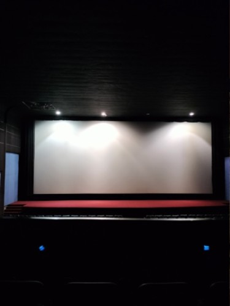

My main interest really is media, especially film. I have loved them ever since I was a child, and as I grew up, I also got interested in filmmaking itself. I consider myself a cinephile. I also love to watch TV shows in my spare time. Despite them just being a hobby and an interest of mine, I would really love to direct something or atleast act in a film. Additionally, I also love to listen to music, whatever genre it may be.